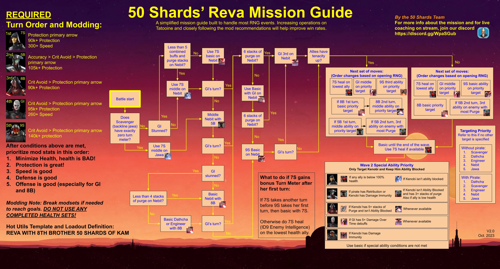

Tatooine Fleet CM
Enemies:
Chimera, Tie Advanced X1, Tie Fighter, Tie Bomber
Reinforcements: Tie Interceptor
Executor
S: Hounds Tooth, Razor Crest, Xanadu Blood
R: Slave 1, Ig-2000, Punishing One
Tatooine Open CM
Enemies:
Wave 1: Sand Trooper Commander, Sandtrooper Scout [x2], Sandtrooper [x2]
Wave 2: Imperial Officer, Sand Trooper Commander, Sandtrooper Scout [x2], Sandtrooper [x2]
Commander Luke Skywalker
Han, Chewbacca, C-3PO, Chewpio
Chewbacca is less crucial on this planet. Due to the stacking DoTs, I like to sub in Wat and place the tank tech on Han. CLS and Chewpio cleanse themselves.
Trench
Jango Fett, Wat, Count Dooku, Nute Gunray
Mother Talzin
Old Daka, Asajj Ventress, Nightsister Zombie, Merrin
Hera
Captain Rex, Kanan Jarrus, Chopper, Sabine
Cere
Baby Cal/Kelleran Beq/Jedi Knight Cal Kestis/General Anakin
Tatooine Fennec CM
Enemies:
Wave 1: Tusken Elder, Tusken Brute, Tusken Chieftan, Tusken Raider [x2]
Wave 2: Tusken Elder, Tusken Chieftan, Tusken Brute, Tusken Raider [x2]
Rey
Fennec, + 3 LS [use Resistance for ease]
Tatooine Jabba CM
Enemies:
Wave 1: Pirate Leader, Pirate Enforcer, Pirate Saboteur, Pirate Bruiser, Pirate Spy
Wave 2: Hondo, Pirate Enforcer, Pirate Saboteur, Pirate Bruiser, Pirate Spy
Note:
The Jabba CM on Tatooine is so beyond brain dead easy that Jabba can quite literally solo the event at relic 7 [with mediocre mods] without his ult, while on auto.
Due to Jabba's middle special dispel, his GL Unique, and the planet modifier granting DoTs to all characters on the field, Jabba outlasts enemy teams, as they effectively kill themselves over time.
Using Jabba's typical team [Skiff, Boussh, Krrsatan, +1] will speed up the battle, but any allies to fill slots will complete the mission.
Reva SM

Enemies:
Wave 1: Chief Nebit, Jawa Scavenger, Jawa Engineer, Jawa, Datcha
Wave 2: Jedi Master Kenobi
Note: An additional Pirate will spawn if platoons are not completed. Modding and turn order is CRITICAL. Please read the modding and strategy in the graphic
Grand Inquisitor
Ninth Sister, Eigthh Brother, Seventh Sister, Fifth Brother
If you have Reva, you can sub her in for Ninth Sister. Reva makes the modding not matter as much, but will be harder to stack purge. Seventh Sister is the key to this fight, she will die with around 25 thermal detonators. Try very hard to get tencity up as soon as possible.
Tatooine Krayt/Mandalore SM
Enemies:
It’s a Damn Krayt Dragon
Bo Katan [Mandalore]
Ig-12/Grogu, Beskar Mando
Bo needs 70k+ health, 270+ speed, and as much offense as possible.
BAM needs 240+ speed, then as much defense and health as possible. Defense sets with health primaries are GOAT.
IG/Paz. Either can be used. Aim for 140k+ health, 65% armor, 270+ speed.
Start using Bo's 1st special, then the second. Start BAM using his first special. Second special should ONLY be used in critical situations. Do not worry about the detonators whatsoever. You need to make sure the event ability is available to use whenever someone gets eaten.